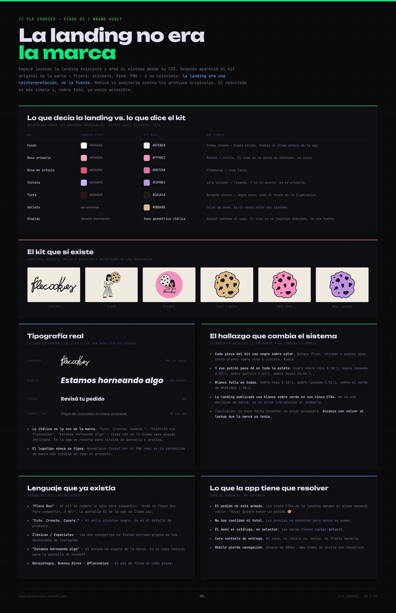
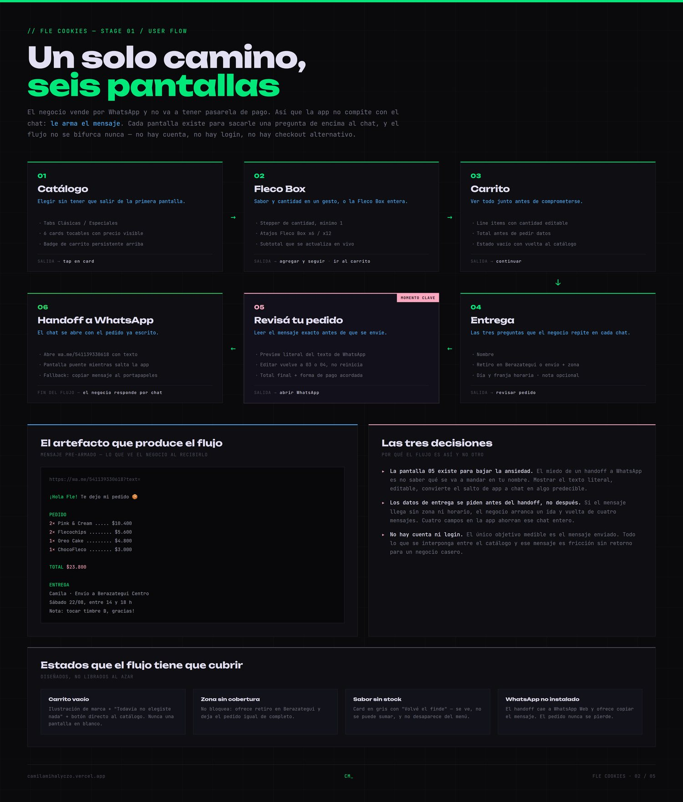
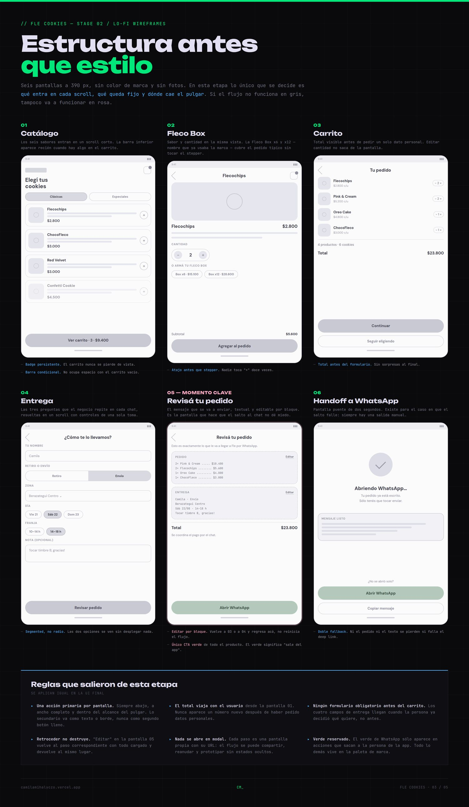
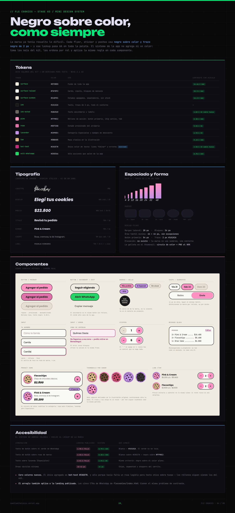
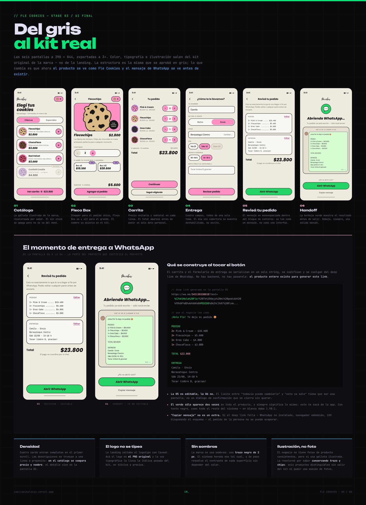
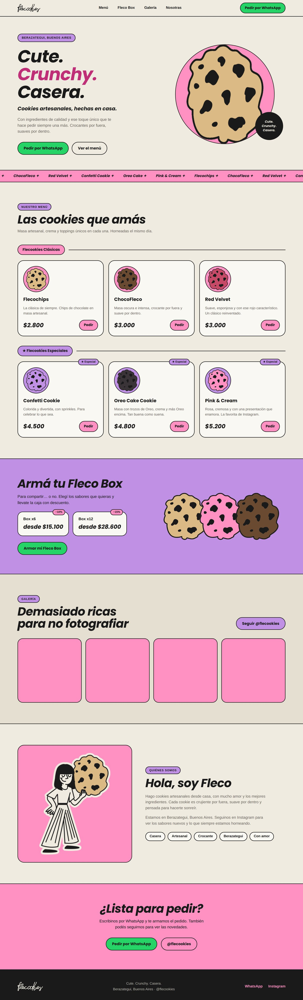

03 — screens
six screens
1170 × 2532. Click to enlarge.


case study — ux/ui
Ordering app for a cookie brand — brand audit, flow, UI and prototype
Fle Cookies already sold through WhatsApp, but the order itself was never assembled: five different buttons opened the same empty chat and the customer had to describe what they wanted from scratch. This case covers turning that landing page into an app where the order is built before the conversation starts — catalogue, flavour and quantity, cart, and a checkout that hands a complete order to WhatsApp without a payment gateway.
01 — the flow
The whole product exists to move one decision from the chat into the interface: what am I ordering and how much does it cost. Everything after checkout stays where the business already works.
01
Catalogue
Two categories, six products with their own names and prices.
02
Flavour & quantity
The card becomes a selector instead of a read-only tile.
03
Cart
Running total, so the customer knows the cost before writing.
04
Checkout
Delivery context: zone, pickup or delivery, time slot.
05
The order arrives pre-written. No payment gateway needed.
02 — process
Brand audit, problem, flow, UI system and screens. Click any board to see it full size.





03 — screens
1170 × 2532. Click to enlarge.
04 — the build
The design work surfaced a problem in the live site, so I rebuilt it. Audited with a DOM-level contrast and target-size pass:
0
contrast failures
0
targets under 44 px
0
images without alt
prefers-reduced-motion on the marquee.The brand had already solved contrast: every flyer and post uses black on colour, a lockup that passes AA across the whole palette. White — what the website used — fails on every single brand colour. The fix was to follow the brand, not to invent.
